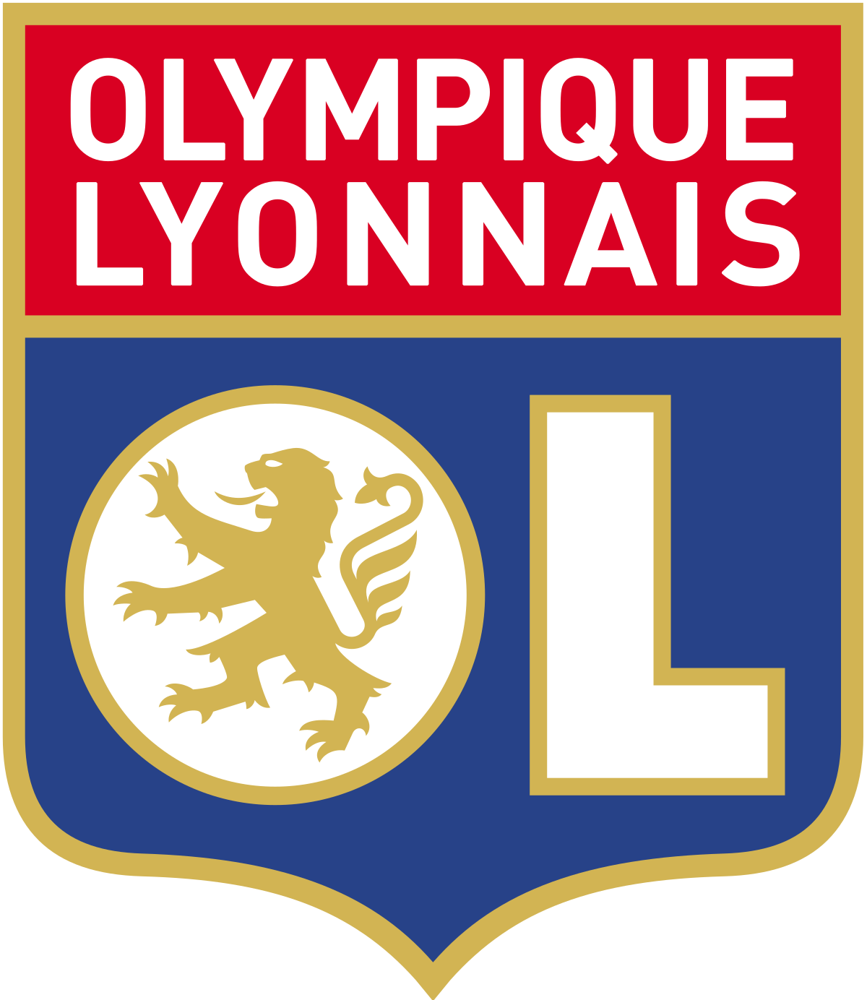

Présentation
L'Olympique lyonnais est un club de football français fondé en 1950 à Lyon. Le club, basé au Parc Olympique lyonnais à Décines-Charpieu, est présidé depuis juin 1987 par Jean-Michel Aulas. L'équipe masculine évolue depuis 1989 en Ligue 1 et est entraînée par Peter Bosz. ⚽
Apply to PrésentationPalmarès
Championnat de France (7) Coupe de France (5) Coupe de la Ligue (1) Trophée des champions (7) Challenge des champions (1) Championnat de France D2 (3) Coupe Intertoto (1)
Apply to Palmarès
Groupama Stadium
Le Parc Olympique lyonnais, anciennement Stade des Lumières, notamment avant son inauguration, et appelé Groupama Stadium par contrat de naming depuis 2017, désigne un stade de football ainsi qu'un complexe de sports et de loisirs comprenant ce stade situés à Décines-Charpieu, dans l'est de l'agglomération lyonnaise. Cet ensemble est la propriété de la société OL Groupe, la holding dont fait partie le club de football de l'Olympique lyonnais.
D'une capacité de 59 186 places, le stade accueille depuis 2016 les rencontres de football de l'Olympique lyonnais, qui se tenaient jusqu'alors au stade de Gerland. Le stade accueille également d'autres événements sportifs et culturels, dont six matchs de l’Euro 2016, ainsi que les demi-finales et la finale de la Coupe du monde féminine de football 2019. Il est, en termes de capacité, le troisième plus grand stade en France.
Apply to Groupama Stadium
Section féminine
La section féminine de l'Olympique lyonnais est un club de football féminin, créé en 2004 et surnommé « les fenottes ».
Les Lyonnaises décrochent quatorze titres consécutifs de championnes de France de 2007 à 2020 ainsi que sept titres de championnes d'Europe en 2011, 2012, 2016, 2017, 2018, 2019 et 2020.
La section féminine de l'OL est le seul club européen à avoir remporté 7 fois la Ligue des champions ainsi qu'à avoir réalisé le triplé (championnat national, coupe nationale et Ligue des champions) sur deux saisons d'affilée (2015-2016 et 2016-2017, puis à nouveau 2018-2019 et 2019-2020). L’OL féminin est le club français de sport collectif, toutes disciplines confondues, qui possède le plus important palmarès européen.
Apply to Section féminine